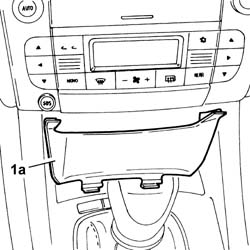
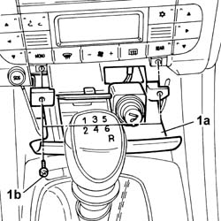
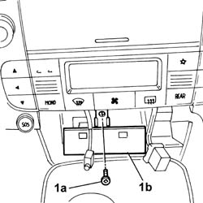
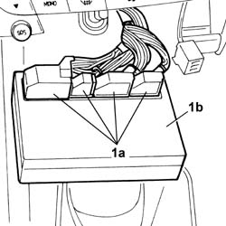

5040D18 Air conditioning CONTROL UNIT - R.R.
- Path
- Procedures > 50 auxiliary units > 5040 AIR CONDITIONING CASING AND COMPONENTS > 5040D air conditioner controls > 5040D18 Air conditioning CONTROL UNIT - R.R.
- Kind
- repair procedure (removal / refitting; the operation number is the code)
- Applies to
- all engines; all production periods
- Interactive page
- https://sloeber94.github.io/elrnDB-lThss/en/#/157287
Applies to: all engines; all production periods
 Removing
Removing
 Refitting
Refitting- Open the boot and disconnect the negative battery terminal.
1. Detach the trim (1a) located under the ashtray (press fit).

Applies to: all engines; all production periods
1. Open the ashtray (1a) and undo the bolts (1b) fixing it to the dashboard. Close the ashtray and extract it disconnecting the cigar lighter connector and releasing the courtesy light bulb.
 | Description | Connector |
|---|---|---|
. | Cigar lighter/current socket | P050 |
| Description | Connector |
|---|---|---|
. | Ashtray light | G035 |

Applies to: all engines; all production periods
1. Undo the bolt (1a) and release the climate control system control unit (1b) from its housing.

Applies to: all engines; all production periods
1. Disconnect the electrical connections (1a) and detach the control unit (1b).
| Description | Connector |
|---|---|---|
. | Climate control system control unit | M070A |
| Description | Connector |
|---|---|---|
. | Climate control sytem control unit | M070B |
| Description | Connector |
|---|---|---|
. | Climate control sytem control unit | M070C |
| Description | Connector |
|---|---|---|
. | Climate control sytem control unit | M070D |

Applies to: all engines; all production periods
Refitting
Removing- Connect the electrical connections for the control unit and fasten it in place using the bolt.
- Connect the electrical connection and the ashtray light bulb (closed), then open the ashtray and secure it using the bolts.
- Position the trim under the ashtray which is a press fit.
See in Op. 5540A20 Exterior lights SWITCH PANEL and instrument panel light dimmer - R.R.
- Connect the negative battery terminal.
Topics linked from this page (1)
Topics that link to this page (22)
- L01 CLIMATE CONTROL NOT WORKING IN ANY CIRCUMSTANCES
- L02 CLIMATE CONTROL SYSTEM NOT WORKING, NOT SENDING AIR
- L03 CLIMATE CONTROL SENDS AIR IRREGULARLY
- L04 THE FAN DOES NOT WORK AT THE DIFFERENT SPEEDS
- L10 CLIMATE CONTROL NOT COOLING
- L12 CLIMATE CONTROL SYSTEM NOT COOLING TO THE DESIRED TEMPERATURE
- L16 CLIMATE CONTROL RECIRCULATION NOT WORKING
- L20 PASSENGER SIDE TEMPERATURE ADJUSTMENT NOT WORKING
- L26 (ELECTRIC) AIR PREHEATING IS NOT ACTIVATED AT LOW OUTSIDE TEMPERATURES
- 5010B56 Duct between climate control casing and air duct to rear seats - R.R.
- 5010D27 UPPER MIXED AIR TEMPERATURE SENSOR (one) left or right - R.R. following electrical circuit check
- 5010D28 LOWER MIXED AIR TEMPERATURE SENSOR (one) left or right - R.R. following electrical circuit check
- 5040C10 Air conditioning CASING - R.R.
- 5040D86 air conditioner right air mixture flap control motor - r r
- 5040D94 Air conditioning upper left air distribution flap control motor (DEFROST) - R.R.
- 5040D96 Air conditioning upper right air distribution flap control motor (DEFROST) - R.R.
- 5505C26 ENGINE COMPARTMENT built in wiring - R.R.
- 5505C31 Under-FACIA WIRING - R.R.
- 5505C41 PASSENGER COMPARTMENT built in WIRING - R.R.
- 7040A10 Instrument facia TRIM - R.R.
- 7040A95 Left or right reinforcement crossmember (one), dashboard and bodyshell supporting crossmember - R.R.
- 7040L17 Passenger compartment front floor carpet - R.R.